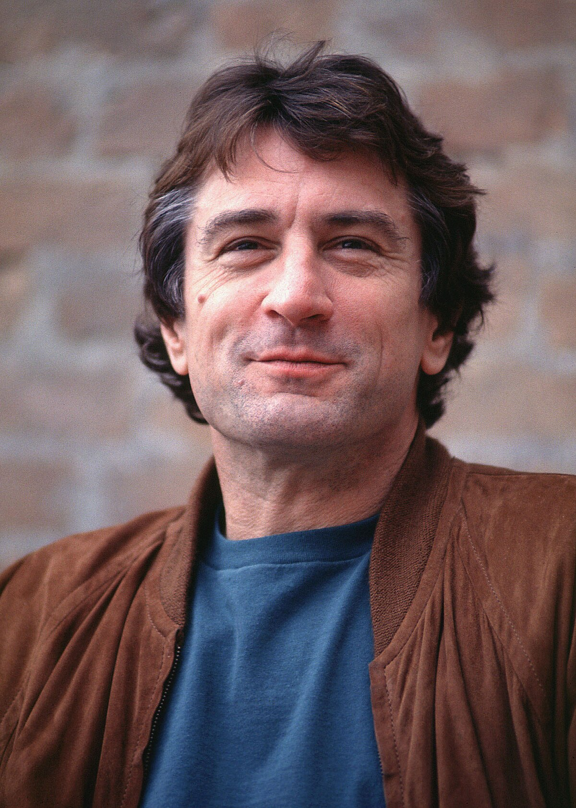

Photos


Robert De Niro (81) is one of the most famous and talented actors in the world. He became well-known for his roles in movies like Taxi Driver, Raging Bull, and The Godfather Part II. He has won many important awards, including two Oscars. Besides acting, Robert De Niro also directs and produces films, and he helped create the Tribeca Film Festival. He is known for his serious acting style and his big impact on the movie industry. He is known for his intense method acting—he once gained 60 pounds for Raging Bull and learned to speak fluent Sicilian for The Godfather Part II. De Niro co-founded Nobu, a globally successful restaurant chain, and is also a political activist and philanthropist. His dedication to his craft and his bold performances have made him an icon in the film industry for over five decades.
Grew up in an artistic family and supports galleries and exhibitions. His father was a renowned painter.
Co-owner of famous restaurants like Nobu and Locanda Verde. A true foodie at heart.
Loves exploring new cultures and occasionally captures the moment with his camera.
Boxing for Raging Bull, martial arts for Ronin, and a longtime fan of competitive sports.
Enjoys jazz and classical music, which often inspires his performances and film scores.

Scan this code to visit my profile!
| Feature | Web 1.0 (1990–2000) |
Web 2.0 (2000–2015+) |
Web 3.0 (2015+) |
|---|---|---|---|
| Content | Static pages, basic design (frames/tables) | User-generated content (blogs, wikis, social media) | Semantic, decentralized, AI-generated content |
| Interaction | Read-only, not interactive | Interactive, user participation (likes, comments) | Smart contracts, DAOs, decentralized interaction |
| Technology | HTML, limited CSS, no JavaScript frameworks | AJAX, APIs, JavaScript libraries, cloud | Blockchain, Web3 APIs, AI/NLP, semantic web |
| Search | Basic, inaccurate search | Improved search with tags and social curation | Semantic search, context-aware queries |
| Ownership | Centralized by companies | Controlled by platforms (Big Tech) | Users own data via decentralized networks |
| Examples | GeoCities, early Yahoo, personal web pages | Facebook, YouTube, Wikipedia, Twitter | Ethereum, IPFS, IBM Watson, dApps |
You find a static website with general drug info written by an author.
No user feedback, no updates, just plain content.
Example: CNN article or a medical info page.
You Google “Acamol side effects” and get results from forums, blogs, and Wikipedia.
Other users share their experience, but it’s scattered and unverified.
Example: Yahoo Answers, Reddit, YouTube.
You ask an AI-driven system “What are Acamol side effects for 30-year-olds?”
It searches a semantic medical database built from millions of user posts and gives a smart answer.
Example: FirstLifeResearch, IBM Watson.